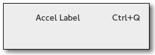

Gtk.AccelLabel¶
Example¶

- Subclasses:
None
Methods¶
- Inherited:
Gtk.Label (50), Gtk.Misc (4), Gtk.Widget (278), GObject.Object (37), Gtk.Buildable (10)
- Structs:
class |
|
|
|
|
|
|
|
|
|
|
Virtual Methods¶
- Inherited:
Gtk.Label (4), Gtk.Widget (82), GObject.Object (7), Gtk.Buildable (10)
Properties¶
- Inherited:
Name |
Type |
Flags |
Short Description |
|---|---|---|---|
r/w/en |
The closure to be monitored for accelerator changes |
||
r/w/en |
The widget to be monitored for accelerator changes |
Style Properties¶
- Inherited:
Signals¶
- Inherited:
Fields¶
- Inherited:
Name |
Type |
Access |
Description |
|---|---|---|---|
label |
r |
Class Details¶
- class Gtk.AccelLabel(*args, **kwargs)¶
- Bases:
- Abstract:
No
- Structure:
The
Gtk.AccelLabelwidget is a subclass ofGtk.Labelthat also displays an accelerator key on the right of the label text, e.g. “Ctrl+S”. It is commonly used in menus to show the keyboard short-cuts for commands.The accelerator key to display is typically not set explicitly (although it can be, with
Gtk.AccelLabel.set_accel()). Instead, theGtk.AccelLabeldisplays the accelerators which have been added to a particular widget. This widget is set by callingGtk.AccelLabel.set_accel_widget().For example, a
Gtk.MenuItemwidget may have an accelerator added to emit the “activate” signal when the “Ctrl+S” key combination is pressed. AGtk.AccelLabelis created and added to theGtk.MenuItem, andGtk.AccelLabel.set_accel_widget() is called with theGtk.MenuItemas the second argument. TheGtk.AccelLabelwill now display “Ctrl+S” after its label.Note that creating a
Gtk.MenuItemwithGtk.MenuItem.new_with_label() (or one of the similar functions forGtk.CheckMenuItemandGtk.RadioMenuItem) automatically adds aGtk.AccelLabelto theGtk.MenuItemand callsGtk.AccelLabel.set_accel_widget() to set it up for you.A
Gtk.AccelLabelwill only display accelerators which haveGtk.AccelFlags.VISIBLEset (seeGtk.AccelFlags). AGtk.AccelLabelcan display multiple accelerators and even signal names, though it is almost always used to display just one accelerator key.- Creating a simple menu item with an accelerator key.
GtkWidget *window = gtk_window_new (GTK_WINDOW_TOPLEVEL); GtkWidget *menu = gtk_menu_new (); GtkWidget *save_item; GtkAccelGroup *accel_group; // Create a GtkAccelGroup and add it to the window. accel_group = gtk_accel_group_new (); gtk_window_add_accel_group (GTK_WINDOW (window), accel_group); // Create the menu item using the convenience function. save_item = gtk_menu_item_new_with_label ("Save"); gtk_widget_show (save_item); gtk_container_add (GTK_CONTAINER (menu), save_item); // Now add the accelerator to the GtkMenuItem. Note that since we // called gtk_menu_item_new_with_label() to create the GtkMenuItem // the GtkAccelLabel is automatically set up to display the // GtkMenuItem accelerators. We just need to make sure we use // GTK_ACCEL_VISIBLE here. gtk_widget_add_accelerator (save_item, "activate", accel_group, GDK_KEY_s, GDK_CONTROL_MASK, GTK_ACCEL_VISIBLE);
- CSS nodes
label ╰── accelerator
Like
Gtk.Label,Gtk.AccelLabelhas a main CSS node with the name label. It adds a subnode with name accelerator.- classmethod new(string)[source]¶
- Parameters:
- Returns:
a new
Gtk.AccelLabel.- Return type:
Creates a new
Gtk.AccelLabel.
- get_accel()[source]¶
- Returns:
- accelerator_key:
return location for the keyval
- accelerator_mods:
return location for the modifier mask
- Return type:
(accelerator_key:
int, accelerator_mods:Gdk.ModifierType)
Gets the keyval and modifier mask set with
Gtk.AccelLabel.set_accel().Added in version 3.12.
- get_accel_widget()[source]¶
- Returns:
the object monitored by the accelerator label, or
None.- Return type:
Gtk.WidgetorNone
Fetches the widget monitored by this accelerator label. See
Gtk.AccelLabel.set_accel_widget().
- get_accel_width()[source]¶
- Returns:
the width needed to display the accelerator key(s).
- Return type:
Returns the width needed to display the accelerator key(s). This is used by menus to align all of the
Gtk.MenuItemwidgets, and shouldn’t be needed by applications.
- refetch()[source]¶
-
Recreates the string representing the accelerator keys. This should not be needed since the string is automatically updated whenever accelerators are added or removed from the associated widget.
- set_accel(accelerator_key, accelerator_mods)[source]¶
- Parameters:
accelerator_key (
int) – a keyval, or 0accelerator_mods (
Gdk.ModifierType) – the modifier mask for the accel
Manually sets a keyval and modifier mask as the accelerator rendered by self.
If a keyval and modifier are explicitly set then these values are used regardless of any associated accel closure or widget.
Providing an accelerator_key of 0 removes the manual setting.
Added in version 3.6.
- set_accel_closure(accel_closure)[source]¶
- Parameters:
accel_closure (
GObject.ClosureorNone) – the closure to monitor for accelerator changes, orNone
Sets the closure to be monitored by this accelerator label. The closure must be connected to an accelerator group; see
Gtk.AccelGroup.connect(). PassingNonefor accel_closure will dissociate self from its current closure, if any.
Property Details¶
- Gtk.AccelLabel.props.accel_closure¶
- Name:
accel-closure- Type:
- Default Value:
- Flags:
The closure to be monitored for accelerator changes
- Gtk.AccelLabel.props.accel_widget¶
- Name:
accel-widget- Type:
- Default Value:
- Flags:
The widget to be monitored for accelerator changes